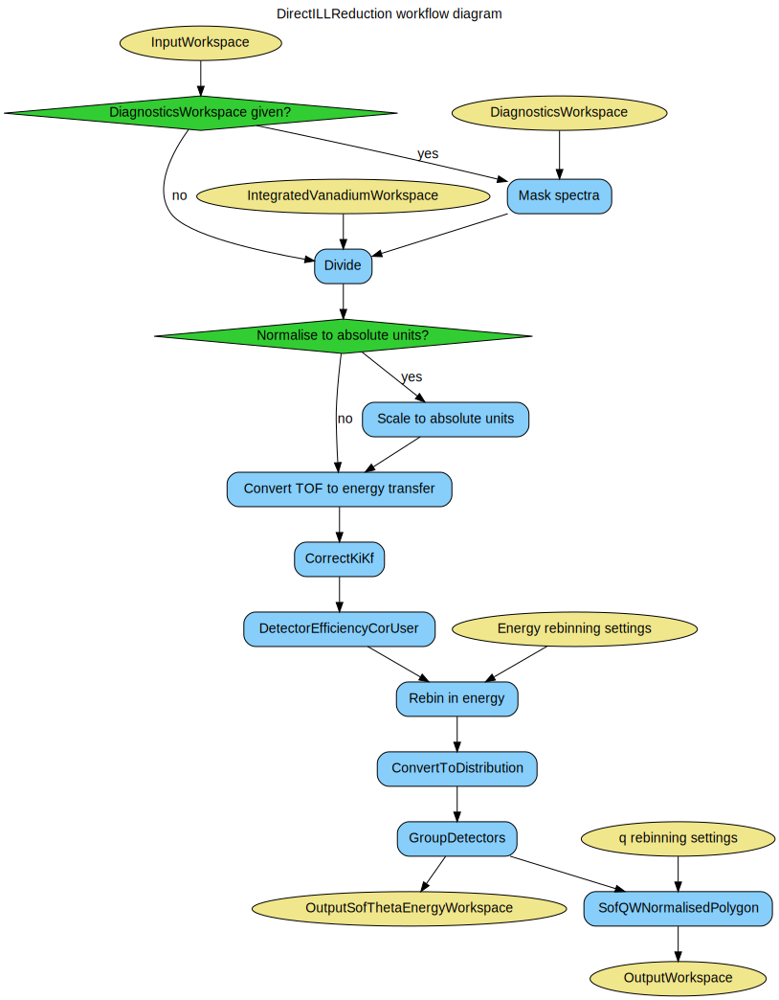

\(\renewcommand\AA{\unicode{x212B}}\)
DirectILLReduction v1¶
{kind=link}
DirectILLReduction dialog.¶
Summary¶
Data reduction workflow for the direct geometry time-of-flight spectrometers at ILL.
See Also¶
DirectILLApplySelfShielding, DirectILLCollectData, DirectILLDiagnostics, DirectILLIntegrateVanadium, DirectILLSelfShielding
Properties¶
Name |
Direction |
Type |
Default |
Description |
|---|---|---|---|---|
InputWorkspace |
Input |
Mandatory |
A workspace to reduce. |
|
OutputWorkspace |
Output |
Mandatory |
The reduced S(Q, DeltaE) workspace. |
|
Cleanup |
Input |
string |
Cleanup ON |
What to do with intermediate workspaces. Allowed values: [‘Cleanup ON’, ‘Cleanup OFF’] |
SubalgorithmLogging |
Input |
string |
Logging OFF |
Enable or disable subalgorithms to print in the logs. Allowed values: [‘Logging OFF’, ‘Logging ON’] |
IntegratedVanadiumWorkspace |
Input |
An integrated vanadium workspace. |
||
AbsoluteUnitsNormalisation |
Input |
string |
Absolute Units OFF |
Enable or disable normalisation to absolute units. Allowed values: [‘Absolute Units OFF’, ‘Absolute Units ON’] |
DiagnosticsWorkspace |
Input |
Detector diagnostics workspace for masking. |
||
GroupingAngleStep |
Input |
number |
Optional |
A scattering angle step to which to group detectors, in degrees. |
EnergyRebinningParams |
Input |
dbl list |
Manual energy rebinning parameters. |
|
EnergyRebinning |
Input |
string |
Energy rebinning when mixing manual and automatic binning parameters. |
|
QBinningParams |
Input |
dbl list |
Manual q rebinning parameters. |
|
Transposing |
Input |
string |
Transposing ON |
Enable or disable OutputWorkspace transposing. Allowed values: [‘Transposing ON’, ‘Transposing OFF’] |
OutputSofThetaEnergyWorkspace |
Output |
Output workspace for reduced S(theta, DeltaE). |
Description¶
This is the main data reduction algorithm in ILL’s time-of-flight reduction suite. It performs the last steps of the reduction workflow, namely vanadium normalisation and transformation to \(S(q,\omega)\) space (optionally \(S(2\theta,\omega)\)). The algorithm’s workflow diagram is shown below:
Input workspaces¶
InputWorkspace should contain data treated by DirectILLCollectData and, optionally, by DirectILLApplySelfShielding.
The mandatory IntegratedVanadiumWorkspace should have gone through DirectILLIntegrateVanadium. This workspace is used for the vanadium normalisation.
DiagnosticsWorkspace should be a product of DirectILLDiagnostics. It is used to mask the spectra of InputWorkspace.
Outputs¶
The algorithm will transform the time-of-flight and spectrum numbers of InputWorkspace into \(S(q,\omega)\) at its output. For \(2\theta\) to \(q\) transformation, SofQWNormalisedPolygon is used. By default, the output is transposed by Transpose. This behavior can be turned off by the Transpose property.
The optional \(S(2\theta,\omega)\) output can be enabled by the OutputSofThetaEnergyWorkspace. This is the processed data right after detector grouping and before the transformation to \(S(q,\omega)\).
Normalisation to absolute units¶
Normalisation to absolute units can be enabled by setting AbsoluteUnitsNormalisation to 'Absolute Units ON'. In this case the data is multiplied by a factor
\(f = \frac{N_V \sigma_V}{N_S}\)
after normalisation to vanadium giving units of barn to the data. In the above, \(N_V\) stands for the vanadium number density, \(\sigma_V\) for vanadium total scattering cross section and \(N_S\) sample number density.
The material properties should be set for InputWorkspace and IntegratedVanadiumWorkspace by SetSample before running this algorithm .
(Re)binning in energy and momentum transfer¶
After conversion from time-of-flight to energy transfer, the binning may differ from spectrum to spectrum if the sample to detector distances are unequal. The SofQWNormalisedPolygon algorithm cannot work with such ragged workspaces and thus rebinning in energy transfer is necessary. By default, the algorithm uses automatic rebinning: - For negative energy transfers, copy binning from the spectrum which covers the largest negative energy transfer range. - For positive energy transfers, use the median bin width over all spectra at zero energy transfer.
The automatic rebinning can be overriden by the EnergyRebinningParams or EnergyRebinning properties. EnergyRebinningParams is directly passed to Rebin as the Params property. On the other hand, EnergyRebinning allows for mixture of automatic and user specified rebinning. Its syntax is a comma separated list of letters a for automatic binning and numbers for ranges and user-specified bin widths. Here are some examples:
- ‘a’
Rebin the entire energy transfer axis automatically. Same as the defalt behavior.
- ‘-4, a, 8’
Rebin the energy transfer axis from -4 to 8 meV automatically.
- ‘a, -1, 0.01, 1, a’
Rebin everything automatically except from -1 to 1 meV, where the bin width is set to 0.01 meV.
- ‘a, -5, 0.1, -1, 0.01, 1’
Automatic rebinning from minimum energy transfer up to -5 meV, after which use user defined binning: between -5 and -1 meV the bin width is 0.1 mev, while between -1 and 1 meV, it is 0.01.
- ‘-10, a, -1, 0.01, 1, a, 4’
Start the energy transfer axis at -10 meV, use automatic binning up to -1 meV. Between -1 and 1 meV use bin width of 0.01 meV. Use automatic binning again from 1 to 4 meV.
QBinningParams are passed to SofQWNormalisedPolygon and have the same format as EnergyRebinningParamas. If the property is not specified, \(q\) is binned to a value that depends on the wavelength and the \(2\theta\) separation of the grouped detectors. By default, the detectors are grouped to 0.01 degree wide bins in \(2\theta\) or to the value of the natural-angle-step instrument parameter. The default behavior can be overriden by the GroupingAngleStep property.
Transposing output¶
After conversion to momentum transfer, the vertical axis of the data is in units of momentum transfer while the horizontal axis is in energy transfer. By default, the data is transposed such that momentum transfer is on the horizontal axis and energy transfer in the vertical. This can be turned off by setting Transposing to 'Transposing OFF'.
Usage¶
For usage of this algorithm, check the examples here.
Categories: AlgorithmIndex | ILL\Direct | Inelastic\Reduction | Workflow\Inelastic
Source¶
Python: DirectILLReduction.py